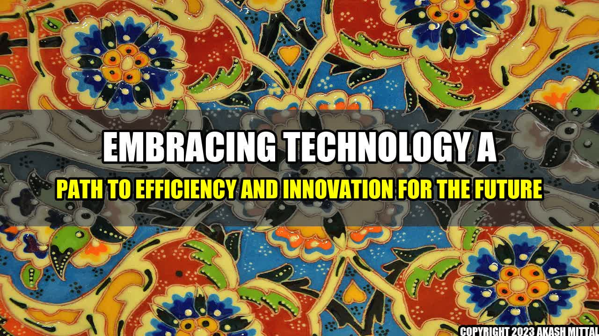

An Inspiring Journey of Embracing Technology in Australia

It was 2016 when Sarah, a young entrepreneur in Brisbane, started her online business for handmade accessories. Despite having a unique product range, she struggled to reach her target audience due to limited resources and lack of technological expertise.
That's when she stumbled upon a government-funded program that provided training and support for SMEs to adopt innovative technologies. She soon learned about social media marketing, e-commerce platforms, and automation tools that transformed her business and increased her customer base exponentially.
Concrete Examples of Technology Adoption in Australia
- The Australian government's $1.1 billion investment in the Digital Economy Strategy to accelerate the adoption of emerging technologies like AI, blockchain, and 5G.
- The widespread use of contactless payments, digital wallets, and mobile banking services by Australian consumers, as reported by the Reserve Bank of Australia.
- The successful implementation of telehealth services during the COVID-19 pandemic, which reduced the strain on healthcare resources and improved patient outcomes.
Embracing Technology: A Path to Efficiency and Innovation for the Future
Adopting technology is no longer a choice but a necessity for businesses to survive and thrive in today's digital age.
- Increased Efficiency: Adopting automation tools, cloud computing, and digital workflows can streamline operations and reduce overhead costs, making businesses more agile and competitive.
- Enhanced Innovation: Emerging technologies like AI, IoT, and blockchain have the potential to disrupt industries and create new opportunities for growth and revenue.
- Improved Customer Experience: With the proliferation of mobile devices and online platforms, businesses can engage with customers 24/7 and deliver personalized experiences that build loyalty and trust.
References and Further Readings
- Australia: Embracing technology: A path to efficiency and innovation for the future - Mondaq
- The Digital Economy Strategy - Australian Government
- Consumer Payment Behaviour in Australia - Reserve Bank of Australia
- Telehealth in Australia: What Happens After COVID-19? - KPMG
Akash Mittal Tech Article
Share on Twitter Share on LinkedIn